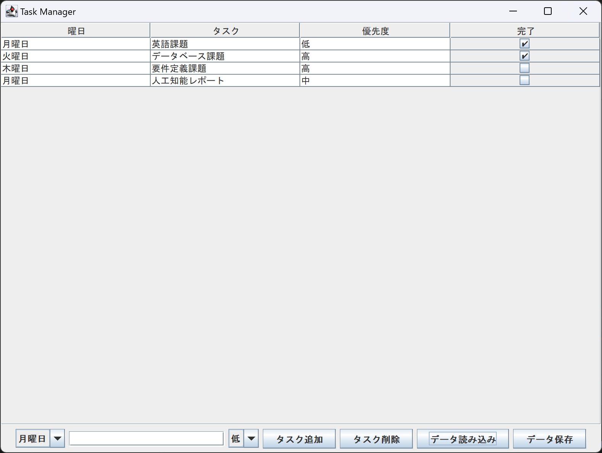
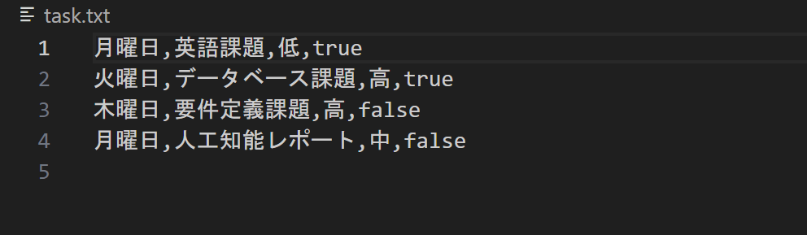

今回のタスク管理アプリケーションは、日々のタスクを効率よく管理し、優先順位を設定するためのツールとして設計しました。このアプリケーションは、ユーザーがタスクを追加、削除、完了状態を管理するための簡単なインターフェースを提供し、またデータの読み込み・保存機能を備えています。
このプログラムでは、タスクのデータを保存および読み込みするためにプレーンテキストファイル（task.txt）を使用します。データはCSV形式で保存され、各行は以下のようにフォーマットされています。
(曜日,タスク,優先度,完了) 完了はBoolean値（true/false）で表現されます。
3.1 機能
このプログラムで実現した機能は以下の通りです：
1. **タスク追加機能**：曜日、タスク内容、優先度を指定して新しいタスクを追加できます。
2. **タスク削除機能**：選択したタスクを削除します。
3. **データ読み込み機能**：事前に保存されたタスクデータを読み込みます。
4. **データ保存機能**：現在のタスクリストをファイルに保存します。
5. **完了状態の管理**：各タスクの完了状態をチェックボックスで管理します。

3.2 具体的な使用方法：
- タスクを追加するには、曜日、タスク内容、優先度を入力し、「タスク追加」ボタンを押します。
- タスクを削除するには、リストから削除したいタスクを選択し、「タスク削除」ボタンを押します。
- データを読み込むには、「データ読み込み」ボタンを押します。
- データを保存するには、「データ保存」ボタンを押します。

3.3 プログラムの構成
1. `TaskManagerApp`: メインのGUIアプリケーションクラス
2. `CheckBoxRenderer`: JTableのセルをレンダリングするためのカスタムレンダラー
3.4 データ構造とアルゴリズム
タスクデータはDefaultTableModelに格納され、JTableに表示されます。タスクの読み込みと保存にはBufferedReaderとBufferedWriterを使用し、CSV形式でデータを処理します。完了状態のチェックボックスはJCheckBoxを使用し、カスタムレンダラーCheckBoxRendererで表示します。
3.5 その他の工夫点
データのソート機能"TableRowSorter"を使用して、列ごとにタスクをソートできるようにしています。
入力フィールドのクリア機能：タスク追加後、入力フィールドを自動的にクリアします。
今回は学んだGUIでToDolistを作ってみました。自分なりにいろんな機能を付け加えることができました。
課題の期限を曜日指定で決めることができるが曜日指定だとわかりにくいのかなと感じました。次ごとのカレンダーなどを用意して日付で期限を決められるようにすればより良いものができたのかなと思いました。
プログラミングの技術が向上したらデータベースを使ってより大規模なデータを管理したり、リマインダー機能を付けたりしていきたいです。